# Python ≥3.5 is required
import sys
assert sys.version_info >= (3, 5)
# Scikit-Learn ≥0.20 is required
import sklearn
assert sklearn.__version__ >= "0.20"
# Common imports
import numpy as np
import os
# to make this notebook's output stable across runs
np.random.seed(42)
# To plot pretty figures
%matplotlib inline
import matplotlib as mpl
import matplotlib.pyplot as plt
mpl.rc('axes', labelsize=14)
mpl.rc('xtick', labelsize=12)
mpl.rc('ytick', labelsize=12)
# Where to save the figures
PROJECT_ROOT_DIR = "."
CHAPTER_ID = "svm"
IMAGES_PATH = os.path.join(PROJECT_ROOT_DIR, "images", CHAPTER_ID)
os.makedirs(IMAGES_PATH, exist_ok=True)
def save_fig(fig_id, tight_layout=True, fig_extension="png", resolution=300):
path = os.path.join(IMAGES_PATH, fig_id + "." + fig_extension)
print("Saving figure", fig_id)
if tight_layout:
plt.tight_layout()
plt.savefig(path, format=fig_extension, dpi=resolution)Chapter 5 – Support Vector Machines
This notebook contains all the sample code and solutions to the exercises in chapter 5.
Setup
First, let’s import a few common modules, ensure MatplotLib plots figures inline and prepare a function to save the figures. We also check that Python 3.5 or later is installed (although Python 2.x may work, it is deprecated so we strongly recommend you use Python 3 instead), as well as Scikit-Learn ≥0.20.
Linear SVM Classification
The next few code cells generate the first figures in chapter 5. The first actual code sample comes after.
Code to generate Figure 5–1. Large margin classification
from sklearn.svm import SVC
from sklearn import datasets
iris = datasets.load_iris()
X = iris["data"][:, (2, 3)] # petal length, petal width
y = iris["target"]
setosa_or_versicolor = (y == 0) | (y == 1)
X = X[setosa_or_versicolor]
y = y[setosa_or_versicolor]
# SVM Classifier model
svm_clf = SVC(kernel="linear", C=float("inf"))
svm_clf.fit(X, y)SVC(C=inf, kernel='linear')# Bad models
x0 = np.linspace(0, 5.5, 200)
pred_1 = 5*x0 - 20
pred_2 = x0 - 1.8
pred_3 = 0.1 * x0 + 0.5
def plot_svc_decision_boundary(svm_clf, xmin, xmax):
w = svm_clf.coef_[0]
b = svm_clf.intercept_[0]
# At the decision boundary, w0*x0 + w1*x1 + b = 0
# => x1 = -w0/w1 * x0 - b/w1
x0 = np.linspace(xmin, xmax, 200)
decision_boundary = -w[0]/w[1] * x0 - b/w[1]
margin = 1/w[1]
gutter_up = decision_boundary + margin
gutter_down = decision_boundary - margin
svs = svm_clf.support_vectors_
plt.scatter(svs[:, 0], svs[:, 1], s=180, facecolors='#FFAAAA')
plt.plot(x0, decision_boundary, "k-", linewidth=2)
plt.plot(x0, gutter_up, "k--", linewidth=2)
plt.plot(x0, gutter_down, "k--", linewidth=2)
fig, axes = plt.subplots(ncols=2, figsize=(10,2.7), sharey=True)
plt.sca(axes[0])
plt.plot(x0, pred_1, "g--", linewidth=2)
plt.plot(x0, pred_2, "m-", linewidth=2)
plt.plot(x0, pred_3, "r-", linewidth=2)
plt.plot(X[:, 0][y==1], X[:, 1][y==1], "bs", label="Iris versicolor")
plt.plot(X[:, 0][y==0], X[:, 1][y==0], "yo", label="Iris setosa")
plt.xlabel("Petal length", fontsize=14)
plt.ylabel("Petal width", fontsize=14)
plt.legend(loc="upper left", fontsize=14)
plt.axis([0, 5.5, 0, 2])
plt.sca(axes[1])
plot_svc_decision_boundary(svm_clf, 0, 5.5)
plt.plot(X[:, 0][y==1], X[:, 1][y==1], "bs")
plt.plot(X[:, 0][y==0], X[:, 1][y==0], "yo")
plt.xlabel("Petal length", fontsize=14)
plt.axis([0, 5.5, 0, 2])
save_fig("large_margin_classification_plot")
plt.show()Saving figure large_margin_classification_plot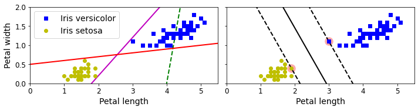
Code to generate Figure 5–2. Sensitivity to feature scales
Xs = np.array([[1, 50], [5, 20], [3, 80], [5, 60]]).astype(np.float64)
ys = np.array([0, 0, 1, 1])
svm_clf = SVC(kernel="linear", C=100)
svm_clf.fit(Xs, ys)
plt.figure(figsize=(9,2.7))
plt.subplot(121)
plt.plot(Xs[:, 0][ys==1], Xs[:, 1][ys==1], "bo")
plt.plot(Xs[:, 0][ys==0], Xs[:, 1][ys==0], "ms")
plot_svc_decision_boundary(svm_clf, 0, 6)
plt.xlabel("$x_0$", fontsize=20)
plt.ylabel("$x_1$ ", fontsize=20, rotation=0)
plt.title("Unscaled", fontsize=16)
plt.axis([0, 6, 0, 90])
from sklearn.preprocessing import StandardScaler
scaler = StandardScaler()
X_scaled = scaler.fit_transform(Xs)
svm_clf.fit(X_scaled, ys)
plt.subplot(122)
plt.plot(X_scaled[:, 0][ys==1], X_scaled[:, 1][ys==1], "bo")
plt.plot(X_scaled[:, 0][ys==0], X_scaled[:, 1][ys==0], "ms")
plot_svc_decision_boundary(svm_clf, -2, 2)
plt.xlabel("$x'_0$", fontsize=20)
plt.ylabel("$x'_1$ ", fontsize=20, rotation=0)
plt.title("Scaled", fontsize=16)
plt.axis([-2, 2, -2, 2])
save_fig("sensitivity_to_feature_scales_plot")Saving figure sensitivity_to_feature_scales_plot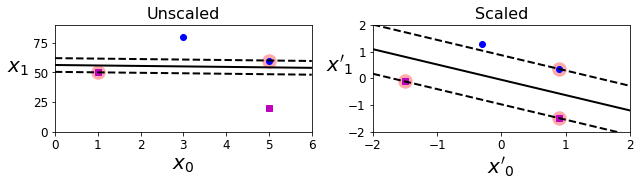
Soft Margin Classification
Code to generate Figure 5–3. Hard margin sensitivity to outliers
X_outliers = np.array([[3.4, 1.3], [3.2, 0.8]])
y_outliers = np.array([0, 0])
Xo1 = np.concatenate([X, X_outliers[:1]], axis=0)
yo1 = np.concatenate([y, y_outliers[:1]], axis=0)
Xo2 = np.concatenate([X, X_outliers[1:]], axis=0)
yo2 = np.concatenate([y, y_outliers[1:]], axis=0)
svm_clf2 = SVC(kernel="linear", C=10**9)
svm_clf2.fit(Xo2, yo2)
fig, axes = plt.subplots(ncols=2, figsize=(10,2.7), sharey=True)
plt.sca(axes[0])
plt.plot(Xo1[:, 0][yo1==1], Xo1[:, 1][yo1==1], "bs")
plt.plot(Xo1[:, 0][yo1==0], Xo1[:, 1][yo1==0], "yo")
plt.text(0.3, 1.0, "Impossible!", fontsize=24, color="red")
plt.xlabel("Petal length", fontsize=14)
plt.ylabel("Petal width", fontsize=14)
plt.annotate("Outlier",
xy=(X_outliers[0][0], X_outliers[0][1]),
xytext=(2.5, 1.7),
ha="center",
arrowprops=dict(facecolor='black', shrink=0.1),
fontsize=16,
)
plt.axis([0, 5.5, 0, 2])
plt.sca(axes[1])
plt.plot(Xo2[:, 0][yo2==1], Xo2[:, 1][yo2==1], "bs")
plt.plot(Xo2[:, 0][yo2==0], Xo2[:, 1][yo2==0], "yo")
plot_svc_decision_boundary(svm_clf2, 0, 5.5)
plt.xlabel("Petal length", fontsize=14)
plt.annotate("Outlier",
xy=(X_outliers[1][0], X_outliers[1][1]),
xytext=(3.2, 0.08),
ha="center",
arrowprops=dict(facecolor='black', shrink=0.1),
fontsize=16,
)
plt.axis([0, 5.5, 0, 2])
save_fig("sensitivity_to_outliers_plot")
plt.show()Saving figure sensitivity_to_outliers_plot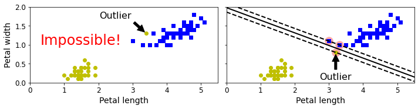
This is the first code example in chapter 5:
import numpy as np
from sklearn import datasets
from sklearn.pipeline import Pipeline
from sklearn.preprocessing import StandardScaler
from sklearn.svm import LinearSVC
iris = datasets.load_iris()
X = iris["data"][:, (2, 3)] # petal length, petal width
y = (iris["target"] == 2).astype(np.float64) # Iris virginica
svm_clf = Pipeline([
("scaler", StandardScaler()),
("linear_svc", LinearSVC(C=1, loss="hinge", random_state=42)),
])
svm_clf.fit(X, y)Pipeline(steps=[('scaler', StandardScaler()),
('linear_svc', LinearSVC(C=1, loss='hinge', random_state=42))])svm_clf.predict([[5.5, 1.7]])array([1.])Code to generate Figure 5–4. Large margin versus fewer margin violations
scaler = StandardScaler()
svm_clf1 = LinearSVC(C=1, loss="hinge", random_state=42)
svm_clf2 = LinearSVC(C=100, loss="hinge", random_state=42)
scaled_svm_clf1 = Pipeline([
("scaler", scaler),
("linear_svc", svm_clf1),
])
scaled_svm_clf2 = Pipeline([
("scaler", scaler),
("linear_svc", svm_clf2),
])
scaled_svm_clf1.fit(X, y)
scaled_svm_clf2.fit(X, y)Pipeline(steps=[('scaler', StandardScaler()),
('linear_svc',
LinearSVC(C=100, loss='hinge', random_state=42))])# Convert to unscaled parameters
b1 = svm_clf1.decision_function([-scaler.mean_ / scaler.scale_])
b2 = svm_clf2.decision_function([-scaler.mean_ / scaler.scale_])
w1 = svm_clf1.coef_[0] / scaler.scale_
w2 = svm_clf2.coef_[0] / scaler.scale_
svm_clf1.intercept_ = np.array([b1])
svm_clf2.intercept_ = np.array([b2])
svm_clf1.coef_ = np.array([w1])
svm_clf2.coef_ = np.array([w2])
# Find support vectors (LinearSVC does not do this automatically)
t = y * 2 - 1
support_vectors_idx1 = (t * (X.dot(w1) + b1) < 1).ravel()
support_vectors_idx2 = (t * (X.dot(w2) + b2) < 1).ravel()
svm_clf1.support_vectors_ = X[support_vectors_idx1]
svm_clf2.support_vectors_ = X[support_vectors_idx2]fig, axes = plt.subplots(ncols=2, figsize=(10,2.7), sharey=True)
plt.sca(axes[0])
plt.plot(X[:, 0][y==1], X[:, 1][y==1], "g^", label="Iris virginica")
plt.plot(X[:, 0][y==0], X[:, 1][y==0], "bs", label="Iris versicolor")
plot_svc_decision_boundary(svm_clf1, 4, 5.9)
plt.xlabel("Petal length", fontsize=14)
plt.ylabel("Petal width", fontsize=14)
plt.legend(loc="upper left", fontsize=14)
plt.title("$C = {}$".format(svm_clf1.C), fontsize=16)
plt.axis([4, 5.9, 0.8, 2.8])
plt.sca(axes[1])
plt.plot(X[:, 0][y==1], X[:, 1][y==1], "g^")
plt.plot(X[:, 0][y==0], X[:, 1][y==0], "bs")
plot_svc_decision_boundary(svm_clf2, 4, 5.99)
plt.xlabel("Petal length", fontsize=14)
plt.title("$C = {}$".format(svm_clf2.C), fontsize=16)
plt.axis([4, 5.9, 0.8, 2.8])
save_fig("regularization_plot")Saving figure regularization_plot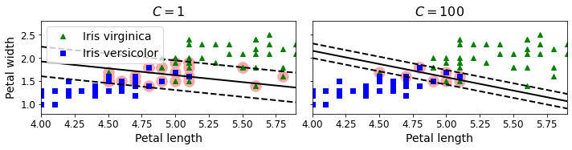
Nonlinear SVM Classification
Code to generate Figure 5–5. Adding features to make a dataset linearly separable
X1D = np.linspace(-4, 4, 9).reshape(-1, 1)
X2D = np.c_[X1D, X1D**2]
y = np.array([0, 0, 1, 1, 1, 1, 1, 0, 0])
plt.figure(figsize=(10, 3))
plt.subplot(121)
plt.grid(True, which='both')
plt.axhline(y=0, color='k')
plt.plot(X1D[:, 0][y==0], np.zeros(4), "bs")
plt.plot(X1D[:, 0][y==1], np.zeros(5), "g^")
plt.gca().get_yaxis().set_ticks([])
plt.xlabel(r"$x_1$", fontsize=20)
plt.axis([-4.5, 4.5, -0.2, 0.2])
plt.subplot(122)
plt.grid(True, which='both')
plt.axhline(y=0, color='k')
plt.axvline(x=0, color='k')
plt.plot(X2D[:, 0][y==0], X2D[:, 1][y==0], "bs")
plt.plot(X2D[:, 0][y==1], X2D[:, 1][y==1], "g^")
plt.xlabel(r"$x_1$", fontsize=20)
plt.ylabel(r"$x_2$ ", fontsize=20, rotation=0)
plt.gca().get_yaxis().set_ticks([0, 4, 8, 12, 16])
plt.plot([-4.5, 4.5], [6.5, 6.5], "r--", linewidth=3)
plt.axis([-4.5, 4.5, -1, 17])
plt.subplots_adjust(right=1)
save_fig("higher_dimensions_plot", tight_layout=False)
plt.show()Saving figure higher_dimensions_plot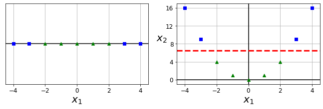
from sklearn.datasets import make_moons
X, y = make_moons(n_samples=100, noise=0.15, random_state=42)
def plot_dataset(X, y, axes):
plt.plot(X[:, 0][y==0], X[:, 1][y==0], "bs")
plt.plot(X[:, 0][y==1], X[:, 1][y==1], "g^")
plt.axis(axes)
plt.grid(True, which='both')
plt.xlabel(r"$x_1$", fontsize=20)
plt.ylabel(r"$x_2$", fontsize=20, rotation=0)
plot_dataset(X, y, [-1.5, 2.5, -1, 1.5])
plt.show()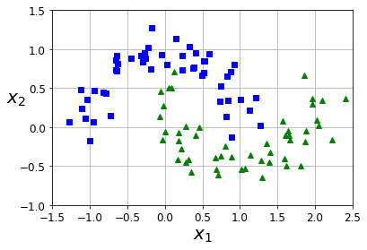
Here is second code example in the chapter:
from sklearn.datasets import make_moons
from sklearn.pipeline import Pipeline
from sklearn.preprocessing import PolynomialFeatures
polynomial_svm_clf = Pipeline([
("poly_features", PolynomialFeatures(degree=3)),
("scaler", StandardScaler()),
("svm_clf", LinearSVC(C=10, loss="hinge", random_state=42))
])
polynomial_svm_clf.fit(X, y)Pipeline(steps=[('poly_features', PolynomialFeatures(degree=3)),
('scaler', StandardScaler()),
('svm_clf', LinearSVC(C=10, loss='hinge', random_state=42))])Code to generate Figure 5–6. Linear SVM classifier using polynomial features
def plot_predictions(clf, axes):
x0s = np.linspace(axes[0], axes[1], 100)
x1s = np.linspace(axes[2], axes[3], 100)
x0, x1 = np.meshgrid(x0s, x1s)
X = np.c_[x0.ravel(), x1.ravel()]
y_pred = clf.predict(X).reshape(x0.shape)
y_decision = clf.decision_function(X).reshape(x0.shape)
plt.contourf(x0, x1, y_pred, cmap=plt.cm.brg, alpha=0.2)
plt.contourf(x0, x1, y_decision, cmap=plt.cm.brg, alpha=0.1)
plot_predictions(polynomial_svm_clf, [-1.5, 2.5, -1, 1.5])
plot_dataset(X, y, [-1.5, 2.5, -1, 1.5])
save_fig("moons_polynomial_svc_plot")
plt.show()Saving figure moons_polynomial_svc_plot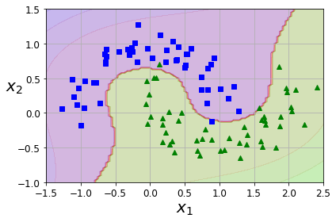
Polynomial Kernel
Next code example:
from sklearn.svm import SVC
poly_kernel_svm_clf = Pipeline([
("scaler", StandardScaler()),
("svm_clf", SVC(kernel="poly", degree=3, coef0=1, C=5))
])
poly_kernel_svm_clf.fit(X, y)Pipeline(steps=[('scaler', StandardScaler()),
('svm_clf', SVC(C=5, coef0=1, kernel='poly'))])Code to generate Figure 5–7. SVM classifiers with a polynomial kernel
poly100_kernel_svm_clf = Pipeline([
("scaler", StandardScaler()),
("svm_clf", SVC(kernel="poly", degree=10, coef0=100, C=5))
])
poly100_kernel_svm_clf.fit(X, y)Pipeline(steps=[('scaler', StandardScaler()),
('svm_clf', SVC(C=5, coef0=100, degree=10, kernel='poly'))])fig, axes = plt.subplots(ncols=2, figsize=(10.5, 4), sharey=True)
plt.sca(axes[0])
plot_predictions(poly_kernel_svm_clf, [-1.5, 2.45, -1, 1.5])
plot_dataset(X, y, [-1.5, 2.4, -1, 1.5])
plt.title(r"$d=3, r=1, C=5$", fontsize=18)
plt.sca(axes[1])
plot_predictions(poly100_kernel_svm_clf, [-1.5, 2.45, -1, 1.5])
plot_dataset(X, y, [-1.5, 2.4, -1, 1.5])
plt.title(r"$d=10, r=100, C=5$", fontsize=18)
plt.ylabel("")
save_fig("moons_kernelized_polynomial_svc_plot")
plt.show()Saving figure moons_kernelized_polynomial_svc_plot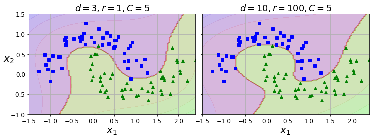
Similarity Features
Code to generate Figure 5–8. Similarity features using the Gaussian RBF
def gaussian_rbf(x, landmark, gamma):
return np.exp(-gamma * np.linalg.norm(x - landmark, axis=1)**2)
gamma = 0.3
x1s = np.linspace(-4.5, 4.5, 200).reshape(-1, 1)
x2s = gaussian_rbf(x1s, -2, gamma)
x3s = gaussian_rbf(x1s, 1, gamma)
XK = np.c_[gaussian_rbf(X1D, -2, gamma), gaussian_rbf(X1D, 1, gamma)]
yk = np.array([0, 0, 1, 1, 1, 1, 1, 0, 0])
plt.figure(figsize=(10.5, 4))
plt.subplot(121)
plt.grid(True, which='both')
plt.axhline(y=0, color='k')
plt.scatter(x=[-2, 1], y=[0, 0], s=150, alpha=0.5, c="red")
plt.plot(X1D[:, 0][yk==0], np.zeros(4), "bs")
plt.plot(X1D[:, 0][yk==1], np.zeros(5), "g^")
plt.plot(x1s, x2s, "g--")
plt.plot(x1s, x3s, "b:")
plt.gca().get_yaxis().set_ticks([0, 0.25, 0.5, 0.75, 1])
plt.xlabel(r"$x_1$", fontsize=20)
plt.ylabel(r"Similarity", fontsize=14)
plt.annotate(r'$\mathbf{x}$',
xy=(X1D[3, 0], 0),
xytext=(-0.5, 0.20),
ha="center",
arrowprops=dict(facecolor='black', shrink=0.1),
fontsize=18,
)
plt.text(-2, 0.9, "$x_2$", ha="center", fontsize=20)
plt.text(1, 0.9, "$x_3$", ha="center", fontsize=20)
plt.axis([-4.5, 4.5, -0.1, 1.1])
plt.subplot(122)
plt.grid(True, which='both')
plt.axhline(y=0, color='k')
plt.axvline(x=0, color='k')
plt.plot(XK[:, 0][yk==0], XK[:, 1][yk==0], "bs")
plt.plot(XK[:, 0][yk==1], XK[:, 1][yk==1], "g^")
plt.xlabel(r"$x_2$", fontsize=20)
plt.ylabel(r"$x_3$ ", fontsize=20, rotation=0)
plt.annotate(r'$\phi\left(\mathbf{x}\right)$',
xy=(XK[3, 0], XK[3, 1]),
xytext=(0.65, 0.50),
ha="center",
arrowprops=dict(facecolor='black', shrink=0.1),
fontsize=18,
)
plt.plot([-0.1, 1.1], [0.57, -0.1], "r--", linewidth=3)
plt.axis([-0.1, 1.1, -0.1, 1.1])
plt.subplots_adjust(right=1)
save_fig("kernel_method_plot")
plt.show()Saving figure kernel_method_plot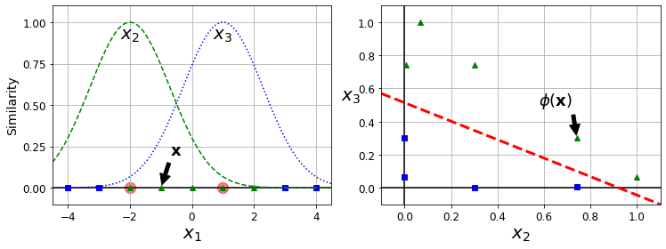
x1_example = X1D[3, 0]
for landmark in (-2, 1):
k = gaussian_rbf(np.array([[x1_example]]), np.array([[landmark]]), gamma)
print("Phi({}, {}) = {}".format(x1_example, landmark, k))Phi(-1.0, -2) = [0.74081822]
Phi(-1.0, 1) = [0.30119421]Gaussian RBF Kernel
Next code example:
rbf_kernel_svm_clf = Pipeline([
("scaler", StandardScaler()),
("svm_clf", SVC(kernel="rbf", gamma=5, C=0.001))
])
rbf_kernel_svm_clf.fit(X, y)Pipeline(steps=[('scaler', StandardScaler()),
('svm_clf', SVC(C=0.001, gamma=5))])Code to generate Figure 5–9. SVM classifiers using an RBF kernel
from sklearn.svm import SVC
gamma1, gamma2 = 0.1, 5
C1, C2 = 0.001, 1000
hyperparams = (gamma1, C1), (gamma1, C2), (gamma2, C1), (gamma2, C2)
svm_clfs = []
for gamma, C in hyperparams:
rbf_kernel_svm_clf = Pipeline([
("scaler", StandardScaler()),
("svm_clf", SVC(kernel="rbf", gamma=gamma, C=C))
])
rbf_kernel_svm_clf.fit(X, y)
svm_clfs.append(rbf_kernel_svm_clf)
fig, axes = plt.subplots(nrows=2, ncols=2, figsize=(10.5, 7), sharex=True, sharey=True)
for i, svm_clf in enumerate(svm_clfs):
plt.sca(axes[i // 2, i % 2])
plot_predictions(svm_clf, [-1.5, 2.45, -1, 1.5])
plot_dataset(X, y, [-1.5, 2.45, -1, 1.5])
gamma, C = hyperparams[i]
plt.title(r"$\gamma = {}, C = {}$".format(gamma, C), fontsize=16)
if i in (0, 1):
plt.xlabel("")
if i in (1, 3):
plt.ylabel("")
save_fig("moons_rbf_svc_plot")
plt.show()Saving figure moons_rbf_svc_plot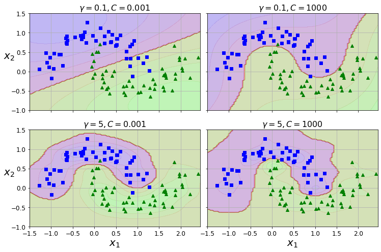
SVM Regression
np.random.seed(42)
m = 50
X = 2 * np.random.rand(m, 1)
y = (4 + 3 * X + np.random.randn(m, 1)).ravel()Next code example:
from sklearn.svm import LinearSVR
svm_reg = LinearSVR(epsilon=1.5, random_state=42)
svm_reg.fit(X, y)LinearSVR(epsilon=1.5, random_state=42)Code to generate Figure 5–10. SVM Regression
svm_reg1 = LinearSVR(epsilon=1.5, random_state=42)
svm_reg2 = LinearSVR(epsilon=0.5, random_state=42)
svm_reg1.fit(X, y)
svm_reg2.fit(X, y)
def find_support_vectors(svm_reg, X, y):
y_pred = svm_reg.predict(X)
off_margin = (np.abs(y - y_pred) >= svm_reg.epsilon)
return np.argwhere(off_margin)
svm_reg1.support_ = find_support_vectors(svm_reg1, X, y)
svm_reg2.support_ = find_support_vectors(svm_reg2, X, y)
eps_x1 = 1
eps_y_pred = svm_reg1.predict([[eps_x1]])def plot_svm_regression(svm_reg, X, y, axes):
x1s = np.linspace(axes[0], axes[1], 100).reshape(100, 1)
y_pred = svm_reg.predict(x1s)
plt.plot(x1s, y_pred, "k-", linewidth=2, label=r"$\hat{y}$")
plt.plot(x1s, y_pred + svm_reg.epsilon, "k--")
plt.plot(x1s, y_pred - svm_reg.epsilon, "k--")
plt.scatter(X[svm_reg.support_], y[svm_reg.support_], s=180, facecolors='#FFAAAA')
plt.plot(X, y, "bo")
plt.xlabel(r"$x_1$", fontsize=18)
plt.legend(loc="upper left", fontsize=18)
plt.axis(axes)
fig, axes = plt.subplots(ncols=2, figsize=(9, 4), sharey=True)
plt.sca(axes[0])
plot_svm_regression(svm_reg1, X, y, [0, 2, 3, 11])
plt.title(r"$\epsilon = {}$".format(svm_reg1.epsilon), fontsize=18)
plt.ylabel(r"$y$", fontsize=18, rotation=0)
#plt.plot([eps_x1, eps_x1], [eps_y_pred, eps_y_pred - svm_reg1.epsilon], "k-", linewidth=2)
plt.annotate(
'', xy=(eps_x1, eps_y_pred), xycoords='data',
xytext=(eps_x1, eps_y_pred - svm_reg1.epsilon),
textcoords='data', arrowprops={'arrowstyle': '<->', 'linewidth': 1.5}
)
plt.text(0.91, 5.6, r"$\epsilon$", fontsize=20)
plt.sca(axes[1])
plot_svm_regression(svm_reg2, X, y, [0, 2, 3, 11])
plt.title(r"$\epsilon = {}$".format(svm_reg2.epsilon), fontsize=18)
save_fig("svm_regression_plot")
plt.show()Saving figure svm_regression_plot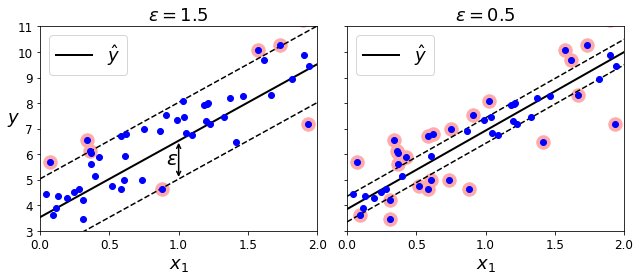
np.random.seed(42)
m = 100
X = 2 * np.random.rand(m, 1) - 1
y = (0.2 + 0.1 * X + 0.5 * X**2 + np.random.randn(m, 1)/10).ravel()Note: to be future-proof, we set gamma="scale", as this will be the default value in Scikit-Learn 0.22.
Next code example:
from sklearn.svm import SVR
svm_poly_reg = SVR(kernel="poly", degree=2, C=100, epsilon=0.1, gamma="scale")
svm_poly_reg.fit(X, y)SVR(C=100, degree=2, kernel='poly')Code to generate Figure 5–11. SVM Regression using a second-degree polynomial kernel
from sklearn.svm import SVR
svm_poly_reg1 = SVR(kernel="poly", degree=2, C=100, epsilon=0.1, gamma="scale")
svm_poly_reg2 = SVR(kernel="poly", degree=2, C=0.01, epsilon=0.1, gamma="scale")
svm_poly_reg1.fit(X, y)
svm_poly_reg2.fit(X, y)SVR(C=0.01, degree=2, kernel='poly')fig, axes = plt.subplots(ncols=2, figsize=(9, 4), sharey=True)
plt.sca(axes[0])
plot_svm_regression(svm_poly_reg1, X, y, [-1, 1, 0, 1])
plt.title(r"$degree={}, C={}, \epsilon = {}$".format(svm_poly_reg1.degree, svm_poly_reg1.C, svm_poly_reg1.epsilon), fontsize=18)
plt.ylabel(r"$y$", fontsize=18, rotation=0)
plt.sca(axes[1])
plot_svm_regression(svm_poly_reg2, X, y, [-1, 1, 0, 1])
plt.title(r"$degree={}, C={}, \epsilon = {}$".format(svm_poly_reg2.degree, svm_poly_reg2.C, svm_poly_reg2.epsilon), fontsize=18)
save_fig("svm_with_polynomial_kernel_plot")
plt.show()Saving figure svm_with_polynomial_kernel_plot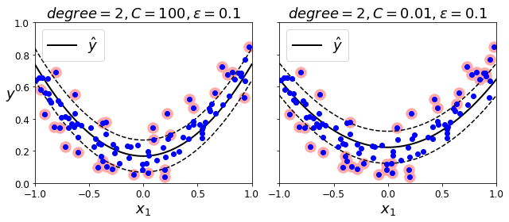
Under the Hood
Decision Function and Predictions
Code to generate Figure 5–12. Decision function for the iris dataset
iris = datasets.load_iris()
X = iris["data"][:, (2, 3)] # petal length, petal width
y = (iris["target"] == 2).astype(np.float64) # Iris virginicafrom mpl_toolkits.mplot3d import Axes3D
def plot_3D_decision_function(ax, w, b, x1_lim=[4, 6], x2_lim=[0.8, 2.8]):
x1_in_bounds = (X[:, 0] > x1_lim[0]) & (X[:, 0] < x1_lim[1])
X_crop = X[x1_in_bounds]
y_crop = y[x1_in_bounds]
x1s = np.linspace(x1_lim[0], x1_lim[1], 20)
x2s = np.linspace(x2_lim[0], x2_lim[1], 20)
x1, x2 = np.meshgrid(x1s, x2s)
xs = np.c_[x1.ravel(), x2.ravel()]
df = (xs.dot(w) + b).reshape(x1.shape)
m = 1 / np.linalg.norm(w)
boundary_x2s = -x1s*(w[0]/w[1])-b/w[1]
margin_x2s_1 = -x1s*(w[0]/w[1])-(b-1)/w[1]
margin_x2s_2 = -x1s*(w[0]/w[1])-(b+1)/w[1]
ax.plot_surface(x1s, x2, np.zeros_like(x1),
color="b", alpha=0.2, cstride=100, rstride=100)
ax.plot(x1s, boundary_x2s, 0, "k-", linewidth=2, label=r"$h=0$")
ax.plot(x1s, margin_x2s_1, 0, "k--", linewidth=2, label=r"$h=\pm 1$")
ax.plot(x1s, margin_x2s_2, 0, "k--", linewidth=2)
ax.plot(X_crop[:, 0][y_crop==1], X_crop[:, 1][y_crop==1], 0, "g^")
ax.plot_wireframe(x1, x2, df, alpha=0.3, color="k")
ax.plot(X_crop[:, 0][y_crop==0], X_crop[:, 1][y_crop==0], 0, "bs")
ax.axis(x1_lim + x2_lim)
ax.text(4.5, 2.5, 3.8, "Decision function $h$", fontsize=16)
ax.set_xlabel(r"Petal length", fontsize=16, labelpad=10)
ax.set_ylabel(r"Petal width", fontsize=16, labelpad=10)
ax.set_zlabel(r"$h = \mathbf{w}^T \mathbf{x} + b$", fontsize=18, labelpad=5)
ax.legend(loc="upper left", fontsize=16)
fig = plt.figure(figsize=(11, 6))
ax1 = fig.add_subplot(111, projection='3d')
plot_3D_decision_function(ax1, w=svm_clf2.coef_[0], b=svm_clf2.intercept_[0])
save_fig("iris_3D_plot")
plt.show()Saving figure iris_3D_plot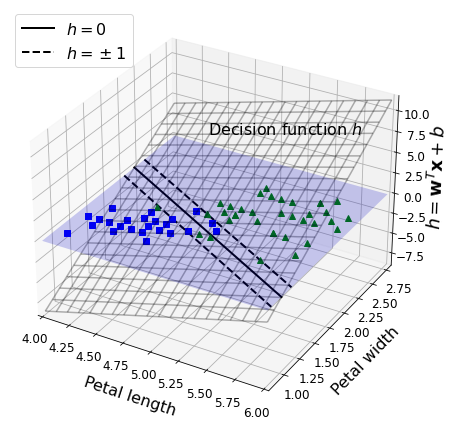
Code to generate Figure 5–13. A smaller weight vector results in a larger margin
def plot_2D_decision_function(w, b, ylabel=True, x1_lim=[-3, 3]):
x1 = np.linspace(x1_lim[0], x1_lim[1], 200)
y = w * x1 + b
m = 1 / w
plt.plot(x1, y)
plt.plot(x1_lim, [1, 1], "k:")
plt.plot(x1_lim, [-1, -1], "k:")
plt.axhline(y=0, color='k')
plt.axvline(x=0, color='k')
plt.plot([m, m], [0, 1], "k--")
plt.plot([-m, -m], [0, -1], "k--")
plt.plot([-m, m], [0, 0], "k-o", linewidth=3)
plt.axis(x1_lim + [-2, 2])
plt.xlabel(r"$x_1$", fontsize=16)
if ylabel:
plt.ylabel(r"$w_1 x_1$ ", rotation=0, fontsize=16)
plt.title(r"$w_1 = {}$".format(w), fontsize=16)
fig, axes = plt.subplots(ncols=2, figsize=(9, 3.2), sharey=True)
plt.sca(axes[0])
plot_2D_decision_function(1, 0)
plt.sca(axes[1])
plot_2D_decision_function(0.5, 0, ylabel=False)
save_fig("small_w_large_margin_plot")
plt.show()Saving figure small_w_large_margin_plot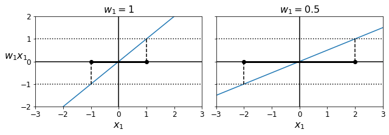
from sklearn.svm import SVC
from sklearn import datasets
iris = datasets.load_iris()
X = iris["data"][:, (2, 3)] # petal length, petal width
y = (iris["target"] == 2).astype(np.float64) # Iris virginica
svm_clf = SVC(kernel="linear", C=1)
svm_clf.fit(X, y)
svm_clf.predict([[5.3, 1.3]])array([1.])Code to generate the Hinge Loss figure:
t = np.linspace(-2, 4, 200)
h = np.where(1 - t < 0, 0, 1 - t) # max(0, 1-t)
plt.figure(figsize=(5,2.8))
plt.plot(t, h, "b-", linewidth=2, label="$max(0, 1 - t)$")
plt.grid(True, which='both')
plt.axhline(y=0, color='k')
plt.axvline(x=0, color='k')
plt.yticks(np.arange(-1, 2.5, 1))
plt.xlabel("$t$", fontsize=16)
plt.axis([-2, 4, -1, 2.5])
plt.legend(loc="upper right", fontsize=16)
save_fig("hinge_plot")
plt.show()Saving figure hinge_plot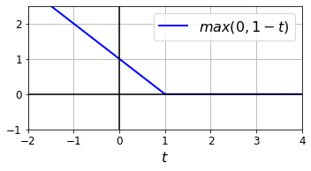
Extra material
Training time
X, y = make_moons(n_samples=1000, noise=0.4, random_state=42)
plt.plot(X[:, 0][y==0], X[:, 1][y==0], "bs")
plt.plot(X[:, 0][y==1], X[:, 1][y==1], "g^")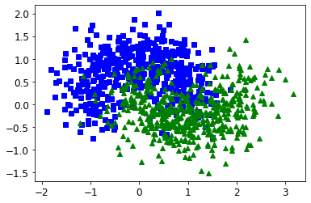
import time
tol = 0.1
tols = []
times = []
for i in range(10):
svm_clf = SVC(kernel="poly", gamma=3, C=10, tol=tol, verbose=1)
t1 = time.time()
svm_clf.fit(X, y)
t2 = time.time()
times.append(t2-t1)
tols.append(tol)
print(i, tol, t2-t1)
tol /= 10
plt.semilogx(tols, times, "bo-")
plt.xlabel("Tolerance", fontsize=16)
plt.ylabel("Time (seconds)", fontsize=16)
plt.grid(True)
plt.show()[LibSVM]0 0.1 0.2017989158630371
[LibSVM]1 0.01 0.19569611549377441
[LibSVM]2 0.001 0.23690319061279297
[LibSVM]3 0.0001 0.41855812072753906
[LibSVM]4 1e-05 0.7902979850769043
[LibSVM]5 1.0000000000000002e-06 0.6455130577087402
[LibSVM]6 1.0000000000000002e-07 0.7135508060455322
[LibSVM]7 1.0000000000000002e-08 0.7550830841064453
[LibSVM]8 1.0000000000000003e-09 0.8036937713623047
[LibSVM]9 1.0000000000000003e-10 0.7757120132446289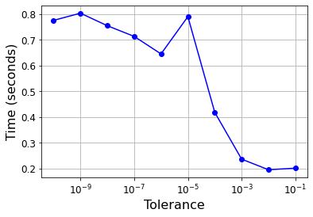
Linear SVM classifier implementation using Batch Gradient Descent
# Training set
X = iris["data"][:, (2, 3)] # petal length, petal width
y = (iris["target"] == 2).astype(np.float64).reshape(-1, 1) # Iris virginicafrom sklearn.base import BaseEstimator
class MyLinearSVC(BaseEstimator):
def __init__(self, C=1, eta0=1, eta_d=10000, n_epochs=1000, random_state=None):
self.C = C
self.eta0 = eta0
self.n_epochs = n_epochs
self.random_state = random_state
self.eta_d = eta_d
def eta(self, epoch):
return self.eta0 / (epoch + self.eta_d)
def fit(self, X, y):
# Random initialization
if self.random_state:
np.random.seed(self.random_state)
w = np.random.randn(X.shape[1], 1) # n feature weights
b = 0
m = len(X)
t = y * 2 - 1 # -1 if y==0, +1 if y==1
X_t = X * t
self.Js=[]
# Training
for epoch in range(self.n_epochs):
support_vectors_idx = (X_t.dot(w) + t * b < 1).ravel()
X_t_sv = X_t[support_vectors_idx]
t_sv = t[support_vectors_idx]
J = 1/2 * np.sum(w * w) + self.C * (np.sum(1 - X_t_sv.dot(w)) - b * np.sum(t_sv))
self.Js.append(J)
w_gradient_vector = w - self.C * np.sum(X_t_sv, axis=0).reshape(-1, 1)
b_derivative = -self.C * np.sum(t_sv)
w = w - self.eta(epoch) * w_gradient_vector
b = b - self.eta(epoch) * b_derivative
self.intercept_ = np.array([b])
self.coef_ = np.array([w])
support_vectors_idx = (X_t.dot(w) + t * b < 1).ravel()
self.support_vectors_ = X[support_vectors_idx]
return self
def decision_function(self, X):
return X.dot(self.coef_[0]) + self.intercept_[0]
def predict(self, X):
return (self.decision_function(X) >= 0).astype(np.float64)
C=2
svm_clf = MyLinearSVC(C=C, eta0 = 10, eta_d = 1000, n_epochs=60000, random_state=2)
svm_clf.fit(X, y)
svm_clf.predict(np.array([[5, 2], [4, 1]]))array([[1.],
[0.]])plt.plot(range(svm_clf.n_epochs), svm_clf.Js)
plt.axis([0, svm_clf.n_epochs, 0, 100])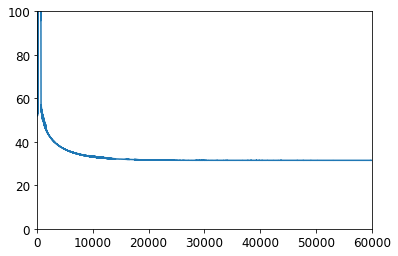
print(svm_clf.intercept_, svm_clf.coef_)[-15.56761653] [[[2.28120287]
[2.71621742]]]svm_clf2 = SVC(kernel="linear", C=C)
svm_clf2.fit(X, y.ravel())
print(svm_clf2.intercept_, svm_clf2.coef_)[-15.51721253] [[2.27128546 2.71287145]]yr = y.ravel()
fig, axes = plt.subplots(ncols=2, figsize=(11, 3.2), sharey=True)
plt.sca(axes[0])
plt.plot(X[:, 0][yr==1], X[:, 1][yr==1], "g^", label="Iris virginica")
plt.plot(X[:, 0][yr==0], X[:, 1][yr==0], "bs", label="Not Iris virginica")
plot_svc_decision_boundary(svm_clf, 4, 6)
plt.xlabel("Petal length", fontsize=14)
plt.ylabel("Petal width", fontsize=14)
plt.title("MyLinearSVC", fontsize=14)
plt.axis([4, 6, 0.8, 2.8])
plt.legend(loc="upper left")
plt.sca(axes[1])
plt.plot(X[:, 0][yr==1], X[:, 1][yr==1], "g^")
plt.plot(X[:, 0][yr==0], X[:, 1][yr==0], "bs")
plot_svc_decision_boundary(svm_clf2, 4, 6)
plt.xlabel("Petal length", fontsize=14)
plt.title("SVC", fontsize=14)
plt.axis([4, 6, 0.8, 2.8])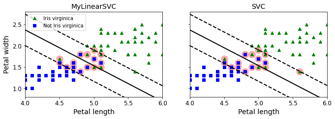
from sklearn.linear_model import SGDClassifier
sgd_clf = SGDClassifier(loss="hinge", alpha=0.017, max_iter=1000, tol=1e-3, random_state=42)
sgd_clf.fit(X, y.ravel())
m = len(X)
t = y * 2 - 1 # -1 if y==0, +1 if y==1
X_b = np.c_[np.ones((m, 1)), X] # Add bias input x0=1
X_b_t = X_b * t
sgd_theta = np.r_[sgd_clf.intercept_[0], sgd_clf.coef_[0]]
print(sgd_theta)
support_vectors_idx = (X_b_t.dot(sgd_theta) < 1).ravel()
sgd_clf.support_vectors_ = X[support_vectors_idx]
sgd_clf.C = C
plt.figure(figsize=(5.5,3.2))
plt.plot(X[:, 0][yr==1], X[:, 1][yr==1], "g^")
plt.plot(X[:, 0][yr==0], X[:, 1][yr==0], "bs")
plot_svc_decision_boundary(sgd_clf, 4, 6)
plt.xlabel("Petal length", fontsize=14)
plt.ylabel("Petal width", fontsize=14)
plt.title("SGDClassifier", fontsize=14)
plt.axis([4, 6, 0.8, 2.8])[-12.52988101 1.94162342 1.84544824]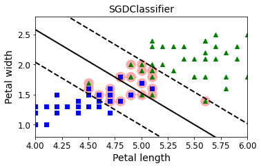
Exercise solutions
1. to 7.
See appendix A.
8.
Exercise: train a LinearSVC on a linearly separable dataset. Then train an SVC and a SGDClassifier on the same dataset. See if you can get them to produce roughly the same model.
Let’s use the Iris dataset: the Iris Setosa and Iris Versicolor classes are linearly separable.
from sklearn import datasets
iris = datasets.load_iris()
X = iris["data"][:, (2, 3)] # petal length, petal width
y = iris["target"]
setosa_or_versicolor = (y == 0) | (y == 1)
X = X[setosa_or_versicolor]
y = y[setosa_or_versicolor]from sklearn.svm import SVC, LinearSVC
from sklearn.linear_model import SGDClassifier
from sklearn.preprocessing import StandardScaler
C = 5
alpha = 1 / (C * len(X))
lin_clf = LinearSVC(loss="hinge", C=C, random_state=42)
svm_clf = SVC(kernel="linear", C=C)
sgd_clf = SGDClassifier(loss="hinge", learning_rate="constant", eta0=0.001, alpha=alpha,
max_iter=1000, tol=1e-3, random_state=42)
scaler = StandardScaler()
X_scaled = scaler.fit_transform(X)
lin_clf.fit(X_scaled, y)
svm_clf.fit(X_scaled, y)
sgd_clf.fit(X_scaled, y)
print("LinearSVC: ", lin_clf.intercept_, lin_clf.coef_)
print("SVC: ", svm_clf.intercept_, svm_clf.coef_)
print("SGDClassifier(alpha={:.5f}):".format(sgd_clf.alpha), sgd_clf.intercept_, sgd_clf.coef_)LinearSVC: [0.28475098] [[1.05364854 1.09903804]]
SVC: [0.31896852] [[1.1203284 1.02625193]]
SGDClassifier(alpha=0.00200): [0.117] [[0.77714169 0.72981762]]Let’s plot the decision boundaries of these three models:
# Compute the slope and bias of each decision boundary
w1 = -lin_clf.coef_[0, 0]/lin_clf.coef_[0, 1]
b1 = -lin_clf.intercept_[0]/lin_clf.coef_[0, 1]
w2 = -svm_clf.coef_[0, 0]/svm_clf.coef_[0, 1]
b2 = -svm_clf.intercept_[0]/svm_clf.coef_[0, 1]
w3 = -sgd_clf.coef_[0, 0]/sgd_clf.coef_[0, 1]
b3 = -sgd_clf.intercept_[0]/sgd_clf.coef_[0, 1]
# Transform the decision boundary lines back to the original scale
line1 = scaler.inverse_transform([[-10, -10 * w1 + b1], [10, 10 * w1 + b1]])
line2 = scaler.inverse_transform([[-10, -10 * w2 + b2], [10, 10 * w2 + b2]])
line3 = scaler.inverse_transform([[-10, -10 * w3 + b3], [10, 10 * w3 + b3]])
# Plot all three decision boundaries
plt.figure(figsize=(11, 4))
plt.plot(line1[:, 0], line1[:, 1], "k:", label="LinearSVC")
plt.plot(line2[:, 0], line2[:, 1], "b--", linewidth=2, label="SVC")
plt.plot(line3[:, 0], line3[:, 1], "r-", label="SGDClassifier")
plt.plot(X[:, 0][y==1], X[:, 1][y==1], "bs") # label="Iris versicolor"
plt.plot(X[:, 0][y==0], X[:, 1][y==0], "yo") # label="Iris setosa"
plt.xlabel("Petal length", fontsize=14)
plt.ylabel("Petal width", fontsize=14)
plt.legend(loc="upper center", fontsize=14)
plt.axis([0, 5.5, 0, 2])
plt.show()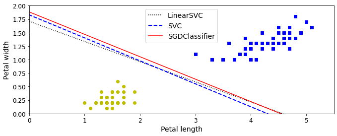
Close enough!
9.
Exercise: train an SVM classifier on the MNIST dataset. Since SVM classifiers are binary classifiers, you will need to use one-versus-all to classify all 10 digits. You may want to tune the hyperparameters using small validation sets to speed up the process. What accuracy can you reach?
First, let’s load the dataset and split it into a training set and a test set. We could use train_test_split() but people usually just take the first 60,000 instances for the training set, and the last 10,000 instances for the test set (this makes it possible to compare your model’s performance with others):
Warning: since Scikit-Learn 0.24, fetch_openml() returns a Pandas DataFrame by default. To avoid this, we use as_frame=False.
from sklearn.datasets import fetch_openml
mnist = fetch_openml('mnist_784', version=1, cache=True, as_frame=False)
X = mnist["data"]
y = mnist["target"].astype(np.uint8)
X_train = X[:60000]
y_train = y[:60000]
X_test = X[60000:]
y_test = y[60000:]Many training algorithms are sensitive to the order of the training instances, so it’s generally good practice to shuffle them first. However, the dataset is already shuffled, so we do not need to do it.
Let’s start simple, with a linear SVM classifier. It will automatically use the One-vs-All (also called One-vs-the-Rest, OvR) strategy, so there’s nothing special we need to do. Easy!
Warning: this may take a few minutes depending on your hardware.
lin_clf = LinearSVC(random_state=42)
lin_clf.fit(X_train, y_train)LinearSVC(random_state=42)Let’s make predictions on the training set and measure the accuracy (we don’t want to measure it on the test set yet, since we have not selected and trained the final model yet):
from sklearn.metrics import accuracy_score
y_pred = lin_clf.predict(X_train)
accuracy_score(y_train, y_pred)0.8348666666666666Okay, 83.5% accuracy on MNIST is pretty bad. This linear model is certainly too simple for MNIST, but perhaps we just needed to scale the data first:
scaler = StandardScaler()
X_train_scaled = scaler.fit_transform(X_train.astype(np.float32))
X_test_scaled = scaler.transform(X_test.astype(np.float32))Warning: this may take a few minutes depending on your hardware.
lin_clf = LinearSVC(random_state=42)
lin_clf.fit(X_train_scaled, y_train)LinearSVC(random_state=42)y_pred = lin_clf.predict(X_train_scaled)
accuracy_score(y_train, y_pred)0.9217333333333333That’s much better (we cut the error rate by about 53%), but still not great at all for MNIST. If we want to use an SVM, we will have to use a kernel. Let’s try an SVC with an RBF kernel (the default).
Note: to be future-proof we set gamma="scale" since it will be the default value in Scikit-Learn 0.22.
svm_clf = SVC(gamma="scale")
svm_clf.fit(X_train_scaled[:10000], y_train[:10000])SVC()y_pred = svm_clf.predict(X_train_scaled)
accuracy_score(y_train, y_pred)0.9455333333333333That’s promising, we get better performance even though we trained the model on 6 times less data. Let’s tune the hyperparameters by doing a randomized search with cross validation. We will do this on a small dataset just to speed up the process:
from sklearn.model_selection import RandomizedSearchCV
from scipy.stats import reciprocal, uniform
param_distributions = {"gamma": reciprocal(0.001, 0.1), "C": uniform(1, 10)}
rnd_search_cv = RandomizedSearchCV(svm_clf, param_distributions, n_iter=10, verbose=2, cv=3)
rnd_search_cv.fit(X_train_scaled[:1000], y_train[:1000])Fitting 3 folds for each of 10 candidates, totalling 30 fits
[CV] C=5.847490967837556, gamma=0.004375955271336425 .................
[CV] .. C=5.847490967837556, gamma=0.004375955271336425, total= 0.8s
[CV] C=5.847490967837556, gamma=0.004375955271336425 .................
[CV] .. C=5.847490967837556, gamma=0.004375955271336425, total= 0.8s
[CV] C=5.847490967837556, gamma=0.004375955271336425 .................
[CV] .. C=5.847490967837556, gamma=0.004375955271336425, total= 0.8s
[CV] C=2.544266730893301, gamma=0.024987648190235304 .................
[CV] .. C=2.544266730893301, gamma=0.024987648190235304, total= 0.9s
[CV] C=2.544266730893301, gamma=0.024987648190235304 .................
[CV] .. C=2.544266730893301, gamma=0.024987648190235304, total= 0.9s
[CV] C=2.544266730893301, gamma=0.024987648190235304 .................
[CV] .. C=2.544266730893301, gamma=0.024987648190235304, total= 0.9s
[CV] C=2.199505425963898, gamma=0.009340106304825553 .................
[CV] .. C=2.199505425963898, gamma=0.009340106304825553, total= 0.8s
[CV] C=2.199505425963898, gamma=0.009340106304825553 .................
[CV] .. C=2.199505425963898, gamma=0.009340106304825553, total= 0.8s
[CV] C=2.199505425963898, gamma=0.009340106304825553 .................
[CV] .. C=2.199505425963898, gamma=0.009340106304825553, total= 0.9s
[CV] C=7.327377306009368, gamma=0.04329656504133618 ..................
[CV] ... C=7.327377306009368, gamma=0.04329656504133618, total= 0.9s
[CV] C=7.327377306009368, gamma=0.04329656504133618 ..................
[CV] ... C=7.327377306009368, gamma=0.04329656504133618, total= 0.9s
[CV] C=7.327377306009368, gamma=0.04329656504133618 ..................
[CV] ... C=7.327377306009368, gamma=0.04329656504133618, total= 0.9s
[CV] C=7.830259944094713, gamma=0.009933958471354695 .................
[CV] .. C=7.830259944094713, gamma=0.009933958471354695, total= 0.9s
[CV] C=7.830259944094713, gamma=0.009933958471354695 .................
[CV] .. C=7.830259944094713, gamma=0.009933958471354695, total= 0.9s
[CV] C=7.830259944094713, gamma=0.009933958471354695 .................
[CV] .. C=7.830259944094713, gamma=0.009933958471354695, total= 0.9s
[CV] C=6.867969780001033, gamma=0.027511132256566175 .................
[CV] .. C=6.867969780001033, gamma=0.027511132256566175, total= 0.9s
[CV] C=6.867969780001033, gamma=0.027511132256566175 .................
[CV] .. C=6.867969780001033, gamma=0.027511132256566175, total= 0.9s
[CV] C=6.867969780001033, gamma=0.027511132256566175 .................
[CV] .. C=6.867969780001033, gamma=0.027511132256566175, total= 0.9s
[CV] C=3.584980864373988, gamma=0.01237128009623357 ..................
[CV] ... C=3.584980864373988, gamma=0.01237128009623357, total= 0.9s
[CV] C=3.584980864373988, gamma=0.01237128009623357 ..................
[CV] ... C=3.584980864373988, gamma=0.01237128009623357, total= 0.9s
[CV] C=3.584980864373988, gamma=0.01237128009623357 ..................
[CV] ... C=3.584980864373988, gamma=0.01237128009623357, total= 0.9s
[CV] C=5.073078322899452, gamma=0.002259275783824143 .................
[CV] .. C=5.073078322899452, gamma=0.002259275783824143, total= 0.7s
[CV] C=5.073078322899452, gamma=0.002259275783824143 .................
[CV] .. C=5.073078322899452, gamma=0.002259275783824143, total= 0.7s
[CV] C=5.073078322899452, gamma=0.002259275783824143 .................
[CV] .. C=5.073078322899452, gamma=0.002259275783824143, total= 0.7s
[CV] C=10.696324058267928, gamma=0.0039267813006514255 ...............
[CV] C=10.696324058267928, gamma=0.0039267813006514255, total= 0.8s
[CV] C=10.696324058267928, gamma=0.0039267813006514255 ...............
[CV] C=10.696324058267928, gamma=0.0039267813006514255, total= 0.8s
[CV] C=10.696324058267928, gamma=0.0039267813006514255 ...............
[CV] C=10.696324058267928, gamma=0.0039267813006514255, total= 0.8s
[CV] C=3.8786881587000437, gamma=0.0017076019229344522 ...............
[CV] C=3.8786881587000437, gamma=0.0017076019229344522, total= 0.7s
[CV] C=3.8786881587000437, gamma=0.0017076019229344522 ...............
[CV] C=3.8786881587000437, gamma=0.0017076019229344522, total= 0.7s
[CV] C=3.8786881587000437, gamma=0.0017076019229344522 ...............
[CV] C=3.8786881587000437, gamma=0.0017076019229344522, total= 0.7sRandomizedSearchCV(cv=3, estimator=SVC(),
param_distributions={'C': <scipy.stats._distn_infrastructure.rv_frozen object at 0x7f93b0a61990>,
'gamma': <scipy.stats._distn_infrastructure.rv_frozen object at 0x7f93b0a61850>},
verbose=2)rnd_search_cv.best_estimator_SVC(C=3.8786881587000437, gamma=0.0017076019229344522)rnd_search_cv.best_score_0.8599947252641863This looks pretty low but remember we only trained the model on 1,000 instances. Let’s retrain the best estimator on the whole training set:
Warning: the following cell may take hours to run, depending on your hardware.
rnd_search_cv.best_estimator_.fit(X_train_scaled, y_train)SVC(C=3.8786881587000437, gamma=0.0017076019229344522)y_pred = rnd_search_cv.best_estimator_.predict(X_train_scaled)
accuracy_score(y_train, y_pred)0.9978166666666667Ah, this looks good! Let’s select this model. Now we can test it on the test set:
y_pred = rnd_search_cv.best_estimator_.predict(X_test_scaled)
accuracy_score(y_test, y_pred)0.9717Not too bad, but apparently the model is overfitting slightly. It’s tempting to tweak the hyperparameters a bit more (e.g. decreasing C and/or gamma), but we would run the risk of overfitting the test set. Other people have found that the hyperparameters C=5 and gamma=0.005 yield even better performance (over 98% accuracy). By running the randomized search for longer and on a larger part of the training set, you may be able to find this as well.
10.
Exercise: train an SVM regressor on the California housing dataset.
Let’s load the dataset using Scikit-Learn’s fetch_california_housing() function:
from sklearn.datasets import fetch_california_housing
housing = fetch_california_housing()
X = housing["data"]
y = housing["target"]Split it into a training set and a test set:
from sklearn.model_selection import train_test_split
X_train, X_test, y_train, y_test = train_test_split(X, y, test_size=0.2, random_state=42)Don’t forget to scale the data:
from sklearn.preprocessing import StandardScaler
scaler = StandardScaler()
X_train_scaled = scaler.fit_transform(X_train)
X_test_scaled = scaler.transform(X_test)Let’s train a simple LinearSVR first:
from sklearn.svm import LinearSVR
lin_svr = LinearSVR(random_state=42)
lin_svr.fit(X_train_scaled, y_train)LinearSVR(random_state=42)Let’s see how it performs on the training set:
from sklearn.metrics import mean_squared_error
y_pred = lin_svr.predict(X_train_scaled)
mse = mean_squared_error(y_train, y_pred)
mse0.9641780189948642Let’s look at the RMSE:
np.sqrt(mse)0.9819256687727764In this training set, the targets are tens of thousands of dollars. The RMSE gives a rough idea of the kind of error you should expect (with a higher weight for large errors): so with this model we can expect errors somewhere around $10,000. Not great. Let’s see if we can do better with an RBF Kernel. We will use randomized search with cross validation to find the appropriate hyperparameter values for C and gamma:
from sklearn.svm import SVR
from sklearn.model_selection import RandomizedSearchCV
from scipy.stats import reciprocal, uniform
param_distributions = {"gamma": reciprocal(0.001, 0.1), "C": uniform(1, 10)}
rnd_search_cv = RandomizedSearchCV(SVR(), param_distributions, n_iter=10, verbose=2, cv=3, random_state=42)
rnd_search_cv.fit(X_train_scaled, y_train)Fitting 3 folds for each of 10 candidates, totalling 30 fits
[CV] C=4.745401188473625, gamma=0.07969454818643928 ..................
[CV] ... C=4.745401188473625, gamma=0.07969454818643928, total= 4.7s
[CV] C=4.745401188473625, gamma=0.07969454818643928 ..................
[CV] ... C=4.745401188473625, gamma=0.07969454818643928, total= 4.6s
[CV] C=4.745401188473625, gamma=0.07969454818643928 ..................
[CV] ... C=4.745401188473625, gamma=0.07969454818643928, total= 4.7s
[CV] C=8.31993941811405, gamma=0.015751320499779724 ..................
[CV] ... C=8.31993941811405, gamma=0.015751320499779724, total= 4.3s
[CV] C=8.31993941811405, gamma=0.015751320499779724 ..................
[CV] ... C=8.31993941811405, gamma=0.015751320499779724, total= 4.2s
[CV] C=8.31993941811405, gamma=0.015751320499779724 ..................
[CV] ... C=8.31993941811405, gamma=0.015751320499779724, total= 4.3s
[CV] C=2.560186404424365, gamma=0.002051110418843397 .................
[CV] .. C=2.560186404424365, gamma=0.002051110418843397, total= 3.8s
[CV] C=2.560186404424365, gamma=0.002051110418843397 .................
[CV] .. C=2.560186404424365, gamma=0.002051110418843397, total= 3.8s
[CV] C=2.560186404424365, gamma=0.002051110418843397 .................
[CV] .. C=2.560186404424365, gamma=0.002051110418843397, total= 3.9s
[CV] C=1.5808361216819946, gamma=0.05399484409787431 .................
[CV] .. C=1.5808361216819946, gamma=0.05399484409787431, total= 3.9s
[CV] C=1.5808361216819946, gamma=0.05399484409787431 .................
[CV] .. C=1.5808361216819946, gamma=0.05399484409787431, total= 3.8s
[CV] C=1.5808361216819946, gamma=0.05399484409787431 .................
[CV] .. C=1.5808361216819946, gamma=0.05399484409787431, total= 3.9s
[CV] C=7.011150117432088, gamma=0.026070247583707663 .................
[CV] .. C=7.011150117432088, gamma=0.026070247583707663, total= 4.3s
[CV] C=7.011150117432088, gamma=0.026070247583707663 .................
[CV] .. C=7.011150117432088, gamma=0.026070247583707663, total= 4.4s
[CV] C=7.011150117432088, gamma=0.026070247583707663 .................
[CV] .. C=7.011150117432088, gamma=0.026070247583707663, total= 4.4s
[CV] C=1.2058449429580245, gamma=0.0870602087830485 ..................
[CV] ... C=1.2058449429580245, gamma=0.0870602087830485, total= 3.8s
[CV] C=1.2058449429580245, gamma=0.0870602087830485 ..................
[CV] ... C=1.2058449429580245, gamma=0.0870602087830485, total= 3.9s
[CV] C=1.2058449429580245, gamma=0.0870602087830485 ..................
[CV] ... C=1.2058449429580245, gamma=0.0870602087830485, total= 3.9s
[CV] C=9.324426408004218, gamma=0.0026587543983272693 ................
[CV] . C=9.324426408004218, gamma=0.0026587543983272693, total= 4.0s
[CV] C=9.324426408004218, gamma=0.0026587543983272693 ................
[CV] . C=9.324426408004218, gamma=0.0026587543983272693, total= 4.0s
[CV] C=9.324426408004218, gamma=0.0026587543983272693 ................
[CV] . C=9.324426408004218, gamma=0.0026587543983272693, total= 3.9s
[CV] C=2.818249672071006, gamma=0.0023270677083837795 ................
[CV] . C=2.818249672071006, gamma=0.0023270677083837795, total= 3.8s
[CV] C=2.818249672071006, gamma=0.0023270677083837795 ................
[CV] . C=2.818249672071006, gamma=0.0023270677083837795, total= 3.8s
[CV] C=2.818249672071006, gamma=0.0023270677083837795 ................
[CV] . C=2.818249672071006, gamma=0.0023270677083837795, total= 3.8s
[CV] C=4.042422429595377, gamma=0.011207606211860567 .................
[CV] .. C=4.042422429595377, gamma=0.011207606211860567, total= 3.8s
[CV] C=4.042422429595377, gamma=0.011207606211860567 .................
[CV] .. C=4.042422429595377, gamma=0.011207606211860567, total= 3.9s
[CV] C=4.042422429595377, gamma=0.011207606211860567 .................
[CV] .. C=4.042422429595377, gamma=0.011207606211860567, total= 3.9s
[CV] C=5.319450186421157, gamma=0.003823475224675185 .................
[CV] .. C=5.319450186421157, gamma=0.003823475224675185, total= 3.8s
[CV] C=5.319450186421157, gamma=0.003823475224675185 .................
[CV] .. C=5.319450186421157, gamma=0.003823475224675185, total= 3.9s
[CV] C=5.319450186421157, gamma=0.003823475224675185 .................
[CV] .. C=5.319450186421157, gamma=0.003823475224675185, total= 3.9sRandomizedSearchCV(cv=3, estimator=SVR(),
param_distributions={'C': <scipy.stats._distn_infrastructure.rv_frozen object at 0x7f9370860850>,
'gamma': <scipy.stats._distn_infrastructure.rv_frozen object at 0x7f9380503890>},
random_state=42, verbose=2)rnd_search_cv.best_estimator_SVR(C=4.745401188473625, gamma=0.07969454818643928)Now let’s measure the RMSE on the training set:
y_pred = rnd_search_cv.best_estimator_.predict(X_train_scaled)
mse = mean_squared_error(y_train, y_pred)
np.sqrt(mse)0.5727524770785359Looks much better than the linear model. Let’s select this model and evaluate it on the test set:
y_pred = rnd_search_cv.best_estimator_.predict(X_test_scaled)
mse = mean_squared_error(y_test, y_pred)
np.sqrt(mse)0.5929168385528734